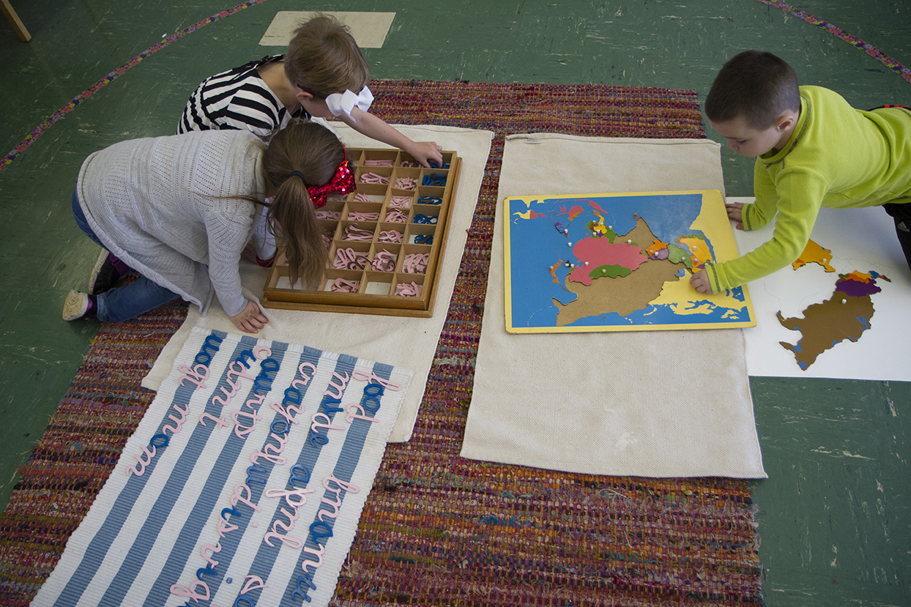
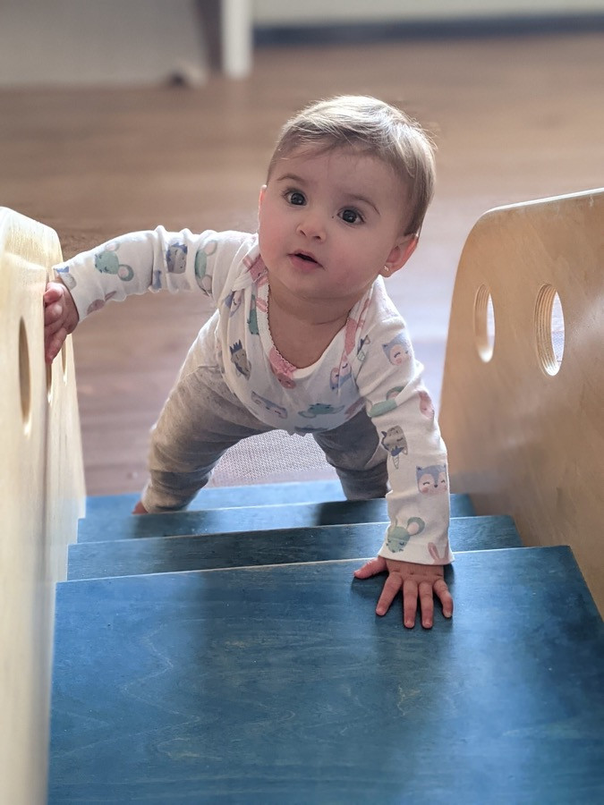
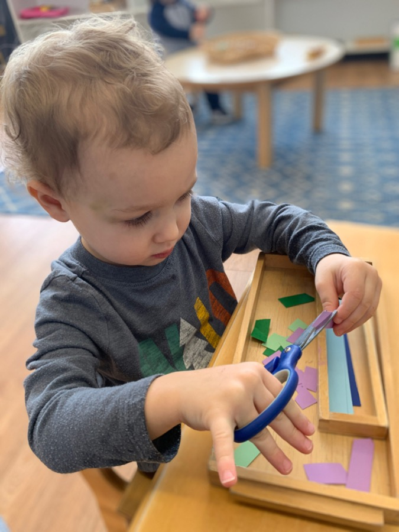
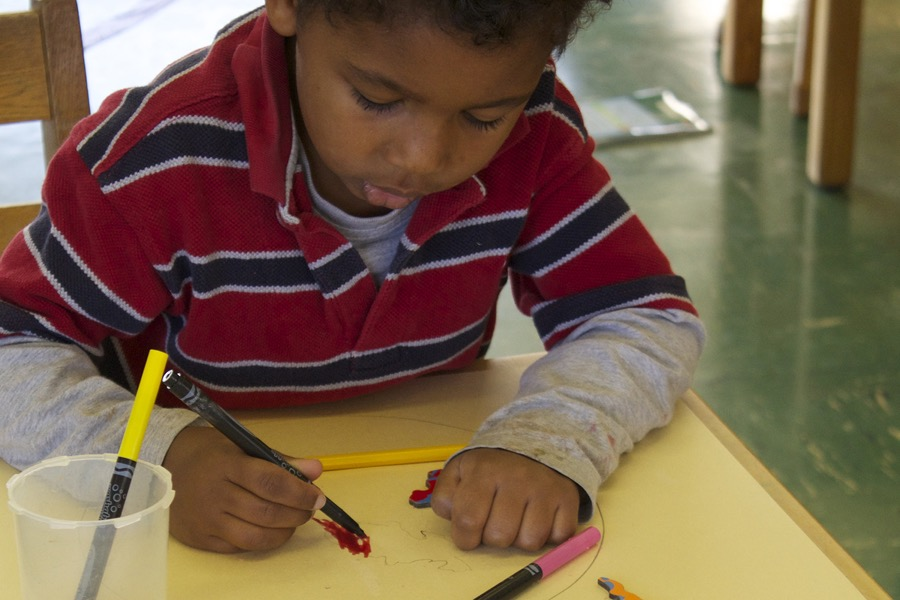
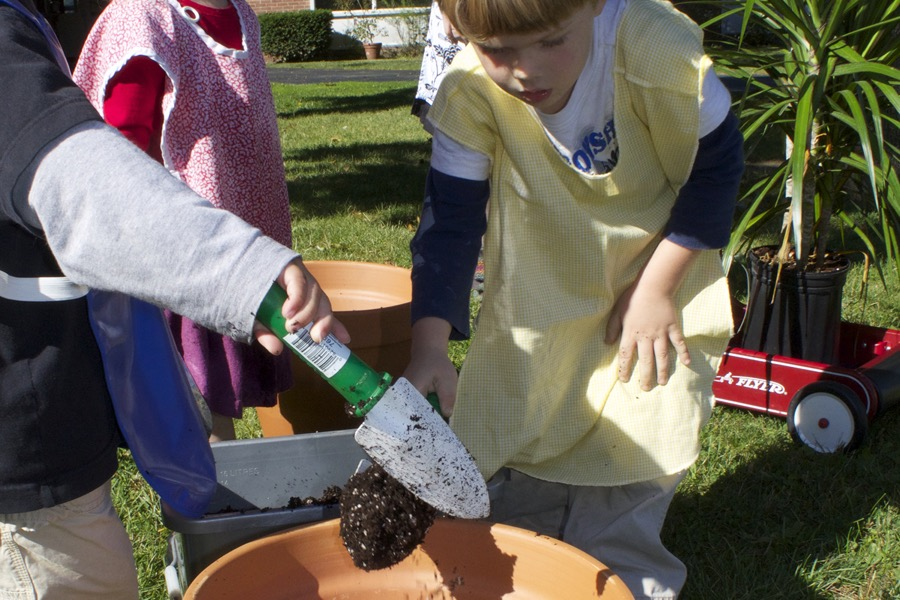
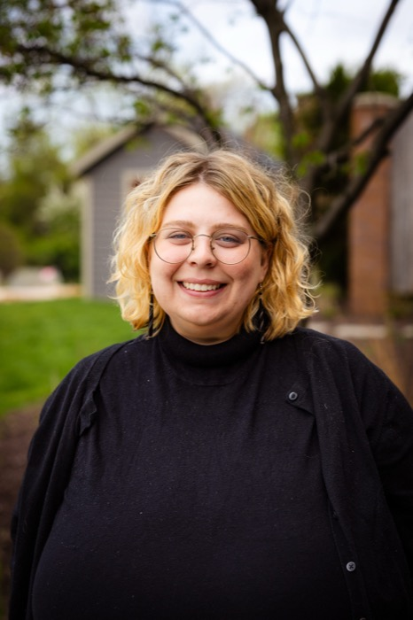
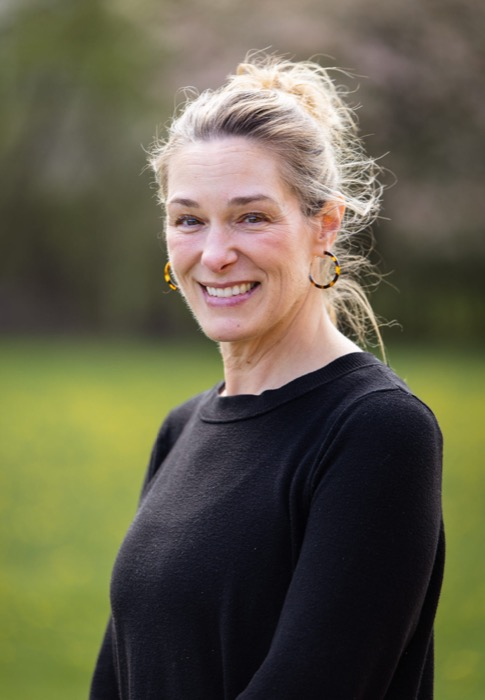

Our philosophy, held since 1965
They grow and change at incredible rates before the age of six.
So we built a school around those years. Our mission is to nourish the child's spirit while fostering exploration, independence, and confidence, and to inspire a lifelong love for learning.
A Montessori education is a remarkably successful educational opportunity for young people. While many educational facilities are engaged in strategies that promote conformity and adherence to a rigid curriculum, a Montessori education allows children freedom to fulfill their natural curiosity and desire to learn.
When children experience success through individualized lessons, personal responsibility, and relevant learning materials, they feel confident and eager to immerse themselves deeper into their education.
When they feel capable and inspired, children learn to carry an optimistic attitude toward learning that affects how they approach challenges, problem solving, and critical thinking.

Four programs carry a child from six weeks old through their kindergarten year, in classrooms designed around how children actually grow.

A calm first environment for infants, with unhurried care and room to move.

Real work for small hands: pouring, sorting, dressing, and doing it myself.

Mixed ages, individual lessons, and the deep concentration Montessori is known for.

Extended care and enrichment that keep the day whole for working families.
Guides and teachers across every program, from the Nido through Children's House.
Cynthia Kerber GowanHead of School

Elizabeth GrahamLead Guide, Nido

Gretchen CavatassiLead Guide, Toddler
David GluckChildren's House
The best way to understand a Montessori classroom is to stand in one. We would love to show you around.
Schedule a Visit